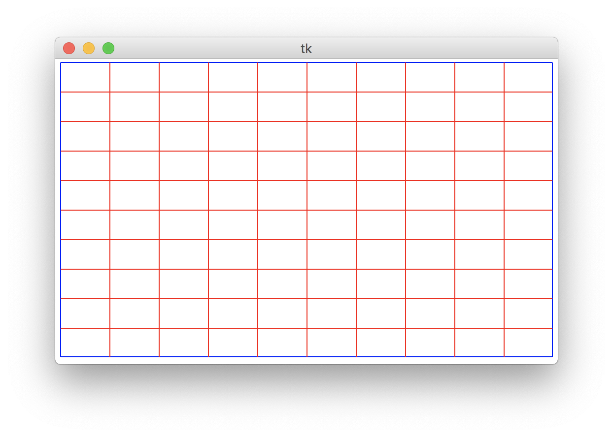
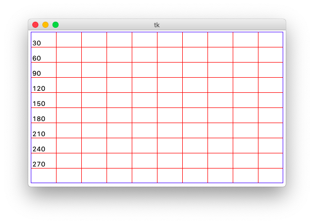
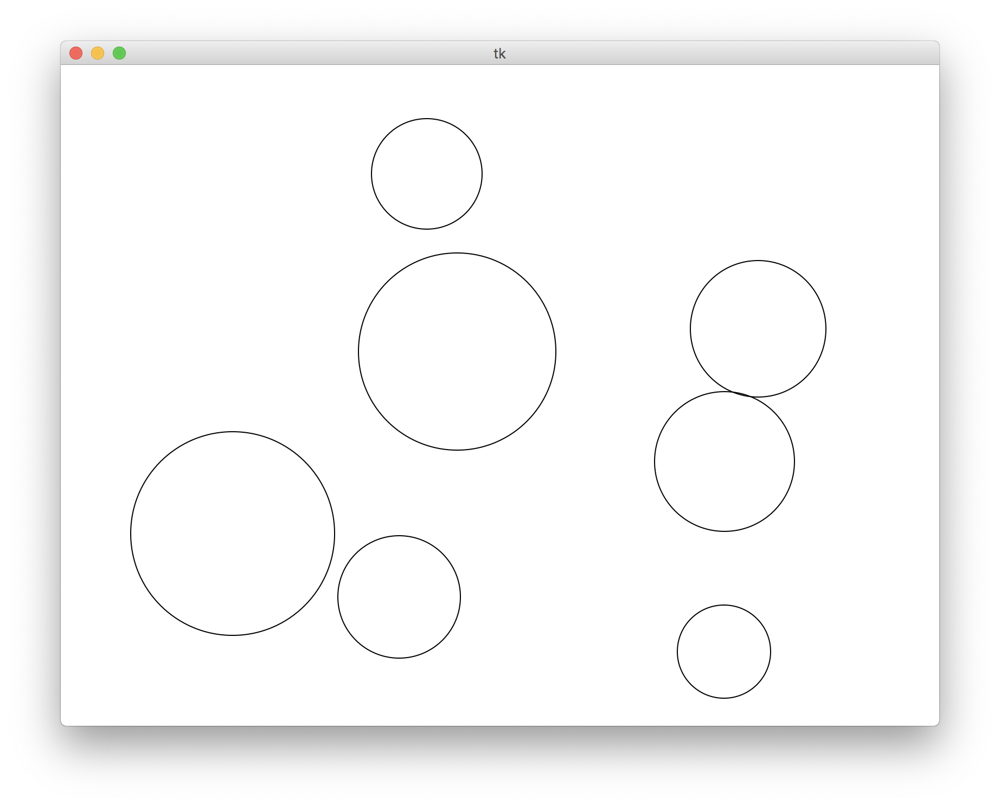

Back to CS 106A Homepage
Written by Nick Parlante, Brahm Capoor and Andrew Tierno
May 19th, 2019
In this week's section handout, we're covering a variety of different topics: tracing, graphics, sorting, and dictionaries amongst others. It'll also have you engage in some basic analysis of the output of your assignment 6's Mimic program to convince yourself it effectively models the text which it is fed as an input. Our goal is for you to gain a sense of how the programming skills you've been developing and are continuing to develop can be leveraged to solve some really interesting and realistic problems.
Python is commonly used in industry and academia as a tool for
managing and visualizing large amounts of data. Almost any
visualization requires the use of some sort of grid on which you can
orient your data. While Python has several toolboxes for producing
such grids automatically, in this problem we'll work through manually
making such a grid using the tkinter library. We'll
primarily employ the following functions, which we reproduce here with
the assumption that a canvas has already been created for
us:
# Draw a line between (x1, y1) and (x2, y2), touching both
# optional: fill='red' to set color ('black' is default)
# optional: width=2 to draw a thicker line (1 is default)
canvas.create_line(x1, y1, x2, y2)
canvas.create_line(x1, y1, x2, y2, fill='red')
canvas.create_line(x1, y1, x2, y2, width=2)
# Draws text on the canvas.
# anchor=tkinter.SW means the given x,y is SouthWest corner of the tet
# of the beginning of the string. Other common choices are W (West) and NW (NorthWest)
# optional: fill='red' to set color ('black' is default)
canvas.create_text(x, y, text=a_str_value, anchor=tkinter.SW)
canvas.create_text(x, y, text=a_str_value, anchor=tkinter.SW, fill='red')
You can download the starter project for this problem
here, which comes with a
main function that's already outfitted to facilitate two
behaviours:
python3 draw-grid.py 10), it will produce a 500
pixel x 300 pixel grid, separated into that many rows and columns.
python3 draw-grid.py 1200 800 25), it will use
the first two arguments as the dimension of the grid and the third
as the number of rows and columns.
Your job is to complete the following function, which the
main function will then call:
def draw_grid(width, height, n):
"""
Divides a canvas into n rows and columns
"""
# make canvas of specified dimensions
canvas = make_canvas(width, height)
# TODO: your code here
# required line to put window on screen
tkinter.mainloop()
The function begins by making a canvas (delineated by a blue border)
for you to separate into a grid using the
make_canvas function (which we provide), and ends by
calling tkinter.mainloop() to put the window on the
screen. It is your responsibility to actually draw the grid.
We'll begin by first dividing the canvas into n vertical
columns, which is accomplished by drawing n - 1 vertical
red lines between said columns, like so:
To determine the x-coordinate of each line, compute its position as a
fraction of the entire width of the canvas, then multiply that
fraction by the canvas width. This fraction will by definition be a
number between 0 and 1, and thus will need to be represented by the
float data type. In your own code, this likely means that
you'll simply use the / operator rather than the integer
division // operator which you might be more likely used
to. Each vertical line should extend the full height of the canvas.
Now, you'll do the same thing to draw separator lines for the rows of the grid to produce a window like this:
Each horizontal line should extend the full width of the canvas.
Finally, you'll label each of the row separation lines with its y-coordinate. Each label should be above and to the right of the leftmost end of the line, like so:

In tkinter nomenclature, we say that the anchor point for
the label is anchor=tkinter.SW, which means that the
coordinates we specify for the label are those for its SouthWest
corner.
Download the starter code for this problem here.

Write a program that draws a random number of circles of random sizes
at random positions on the canvas. Be careful to make sure that none
of the drawn circles are cut off by the edge of your canvas. You are
provided with the constants WIDTH and
HEIGHT (the canvas width and height, respectively),
RADIUS_MAX and RADIUS_MIN (the
maximum/minimum radius that each random circle may have), and
N_CIRCLES_MAX (the maximum number of circles that may be
generated in one run of our program. Note that each run should
generate between 1 and N_CIRCLES_MAX circles inclusive on
both ends). Specifically, your job is to implement the following
function:
def make_all_circles(canvas)
into which is passed a canvas and whose job is to do the random
drawing of the circles. You might find the following functions
helpful, some of which are found in the
random module:
# draws an oval on a canvas, the top left corner of whose bounding box
# is at (x0, y0) and the bottom right corner of whose bounding box is
# at (x1, y1)
canvas.create_oval(x0, y0, x1, y1)
# returns a random integer between lower and upper, inclusive of both
# bounds
random.randint(lower, upper)
# returns a random number between 0 and 1
random.random()
lambdas
Solve each of the following challenges in one line of Python, using
the lambda technique:
strs, sort the list
case-insensitively (i.e. ignoring whether the word is upper or lower
case)
strs, sort the list according
to the last character of each string, case-insensitively.
nums, sort the list according
to the absolute difference between each number and 3.14. Python has
an abs function, which takes as input a number and
returns its absolute value, and which you might find helpful in this
problem.
[ ('main st.', 4, 4000), ('elm st.', 1, 1200), ('pine st.', 2,
1600)]
Sort the list in the following ways:
Recall the Big Tweets Data problem from last week, in which we worked
with a user_tags dictionary whose keys were twitter
usernames and whose values were additional nested dictionaries keeping
track of the frequencies of Hashtag usage, like so:
user_tags = {'@alice': {'#apple': 1, '#banana': 2}, '@bob': {'#apple': 1}}
One of the suggested extensions for this problem was to implement a
function called flat_counts, which takes in a
user_tags and returns a dictionary that counts the number
of times each Hashtag is used, across all users. For example, calling
flat_counts and passing the
user_tags dictionary in as a parameter would lead to the
following behaviour:
>>> flat_counts(user_tags)
{'#apple': 2, '#banana': 2}
Now, armed with your new toolkit for sorting, your job is to implement the following function:
def most_used(flat_counts)
which takes in a 'flat' dictionary as described above, and returns the
most frequently used hashtag in the dataset. With a solid
understanding of how lambdas can be used in sorting, you
should be able to solve this in just a few lines of code. As a hint,
dictionaries have a built-in items() function that
returns a list of (key, value) tuples.
Download the starter file for this problem here.
A rogue Cal student has somehow gained access to a computer on Stanford premises and as a misguided attempt to demonstrate their technical superiority, has left an ill-intentioned program -- a 'Pynary bomb' -- for us to deal with. Left unchecked, there's no telling what this program might do: perhaps it'll delete the 106AP website and all your hard work on the assignments, or perhaps it'll constantly post low-quality content to SMFET, diluting Stanford's cultural credibility.
Fortunately for us, that student underestimated both your tenacity and skill with Python, and it's up to you to save the day. Your mission, should you choose to accept it, is to trace through the student's program (reproduced below) and to figure out the set of command line arguments that 'defuse' the bomb.
We've collected some intel about the program, which we're sharing with you here:
def swap(li, idx0, idx1):
temp = li[idx0]
li[idx0] = li[idx1]
li[idx1] = temp
return idx1 - 1
def extends(d, k1, k2):
copy = d[k1]
copy.extend(d[k2])
def slicer(lst, val):
lst = lst[val:]
def even_odd_counter(d):
d_even_odd = {}
for k in d.keys():
for v in d[k]:
x = v % 2
if x not in d_even_odd:
d_even_odd[x] = 0
d_even_odd[x] += 1
return d_even_odd
def foo(inp1, inp2, inp3):
y = {'a': [1], 'b': [2,3], 'c': [4,5,6], 'd':[7,8,9,10], 'e':[11,12,13,14,15]}
x = sorted(list(y.keys()), reverse=True) # sorts y.keys() in descending order
idx0 = 0
while idx0 <= inp1:
inp1 = swap(x, 0, inp1)
if y[x[2]] != [2,3] and x[4] != 'a':
print("BOOM!!")
return
slicer(x, 2)
extends(y, x[0], x[inp2])
if len(y[x[0]]) != 5:
print("BOOM!!")
return
d_count = even_odd_counter(y)
if d_count[1] != inp3:
print("BOOM!!")
return
print("Phew! That was a close one.")
print("You've defeated the Pynary Bomb, congratulations!")
def main():
args = sys.argv[1:]
print("Good luck...")
foo(int(args[0]), int(args[1]), int(args[2]))
if __name__ == "__main__":
main()
Thanks to Sheridan Rea for suggesting this problem!
One of the programs you'll have written as part of assignment 6 is called Mimic, in which you examine a piece of text and associate individual words with those that might follow them. In doing so, you gain the ability to generate new text by continuously choosing new words from the ones you previously selected.
This program involves constructing what is called a Markov Model, in which you generate new data (in this case, words), based solely on information about the last piece of data you generated. Markov Models are widely employed to solve all sorts of problems in Artificial Intelligence research. In fact, many of the most widely-used techniques in Natural Language Processing use representations of words produced from a process not unlike that which you're tasked with implementing in Assignment 6. One of the most interesting properties of such models is that they help us to construct a statistical model of Natural Language, and to consequently make predictions about it. In this problem, you'll explore the statistical properties of the model constructed in the Mimic program, using only the skills you've already developed as a Python programmer.
Begin by downloading the starter code for this project here from the course website and importing it into PyCharm. The project comes with a few important files:
stats.py, in which you'll be writing code to analyze
the output of the Mimic program.
alice-book.txt, the full text of
Alice in Wonderland.
alice-sample.txt, produced by running my own Mimic
solution as follows:
$ python3 mimic.py alice-book.txt 1000
tale-of-two-cities.txt, the full text of
A Tale of Two Cities.
tale-of-two-cities-sample.txt, produced by running my
own Mimic solution as follows:
$ python3 mimic.py tale-of-two-cities.txt 1000
Each of the -sample.txt files are approximately 1000
words and as the assignment handout suggests, should sound like
they're in the voice of the original text. You'll verify this in this
problem!
Your goal in this problem is to write a program that analyses and
prints the frequency of words in a piece of text. You'll then use the
program to compare the distributions of word occurrences between a
piece of text and the output of the Mimic program, run on that piece
of text. We've provided some basic scaffolding for you in
stats.py, which you can run like so:
$ python3 stats.py alice-book.txt
Your job is to implement the following function:
def print_most_frequent(filename)
which takes as a parameter the name of a file and ultimately prints the words in the file in ascending order of how frequently they are used, as well as their frequency counts. We'll leave your exact decompositional strategy up to you, but your program should look fairly similar in structure to the Mimic assignment itself.
Once you've got the print_most_frequent function (and by
extension the stats.py program) up and running, it's time
to use it to examine the frequency distributions of the words in
various files. For example, run
python3 stats.py alice-book.txt and
python3 stats.py alice-sample.txt and compare the
outputs. Do the two files use the same words the most frequently? If
not, what might be causing that difference? Is the same true for
A Tale of Two Cities?
While we'll leave the actual strategy of decomposition and other implementation details largely up to you, here are a few directions you could take, some of which I employed in my own solution:
f.read() function to read the entire text of the file
as a string and the s.split() function to split that
string into a list of space-separated tokens.
word_count_pairs = list(counts.items())
Each of these tuples represents a key and its corresponding value.
To get the key, you can index into the tuple at position 0 and to
get the value, you can index into the tuple at position 1.
While you were hopefully able to gain some insights into the language model that the Mimic program constructs, there's plenty you can do to continue to explore this, if you so choose:
stats.py to see how they're different. To save the
output of Mimic to a text file, run it like so:
$ python3 mimic.py <textfile> <limit> > <filename>.txt
and replace any expressions in angle brackets with strings or
numbers of your own choosing. The results will be stored in
<filename>.txt.